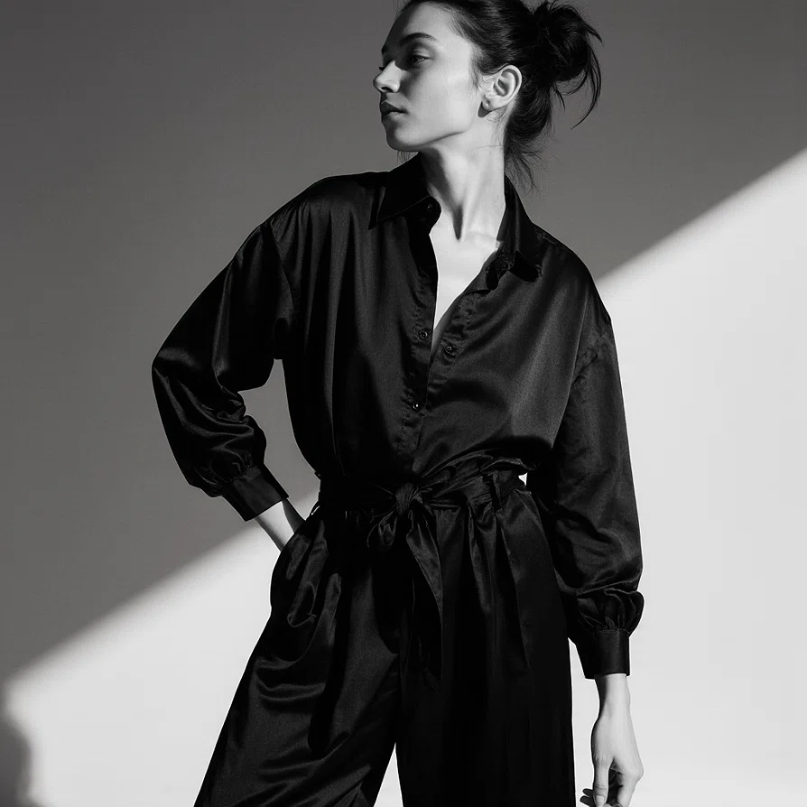

Юлия Сахарова
Product Manager | Product Owner
Превращаю хаос в IT-продукты
Почти 7 лет в IT. Путь начался с техподдержки «Астрал», где я поняла: знаю, что чинить, лучше тех, кто пишет ТЗ. Сейчас работаю на стыке AI, бизнеса и разработки. Считаю unit-экономику, защищаю бюджеты и строю процессы, чтобы команда двигалась в одну сторону. Говорю на одном языке с бизнесом, пользователями и разработчиками.
Готова провести 30-минутный разбор вашего текущего продукта уже сейчас.

Подход
Продуктовое мышление
Работаю с метриками: MRR, CAC, LTV, retention, NPS. Считаю unit-экономику до того, как идём в разработку. Если фича не закрывает боль пользователя и не приносит денег — её нет в roadmap.
Язык бизнеса
Защищаю бюджеты перед финдиром. Считаю ROI, избегаемые затраты, точку безубыточности. Фокус — на P&L, а не на количестве закрытых тикетов в Jira.
Мост между командами
Пишу ТЗ, которые разработчики понимают с первого раза. Собираю кликабельные прототипы за часы — это снимает «испорченный телефон» между бизнесом и командой.
Кросс-функциональность
Разбираюсь в дизайне, маркетинге и PR достаточно, чтобы ставить задачи и принимать работу. Не подменяю специалистов — понимаю их контекст, вижу продукт целиком и избегаю «испорченного телефона» между командами.
Data-Driven & AI-Native
Принимаю решения на основе метрик и данных. Понимаю ограничения и возможности LLM, умею проектировать RAG-системы и оценивать стоимость токенов до начала разработки.
Кейсы
Астрал · AI-бот для техподдержки
ROI 1962%
70% рутины → автоматизация. Экономия 981K ₽/год. Окупаемость 22 дня.
Спроектировала архитектуру с учетом Security by Design: маскирование PII-данных перед отправкой в LLM, кэширование ответов (снижение затрат на API на 30%) и протоколы автоудаления скриншотов. Защитила бюджет и минимизировала репутационные риски компании.
Читать кейс →Нейросборка · AI-комьюнити и платформа знаний
0% оттока экспертов
Регламенты, подписка, RAG-чат. Комьюнити превратилось в экосистему.
Читать кейс →StoryAxis · Платформа иммерсивных квестов
4 потока монетизации
Entry Points. Персонализация сценариев. Прогнозируемая доходность в первый год.
Читать кейс →DesignMatrix · 3D-платформа интерьеров с AI
ROI 20–25%
Концепт-проект. Бюджет 12–50 млн ₽ в зависимости от локации команды. Окупаемость 18–24 месяца.
Читать кейс →Обо мне
Мой подход: сначала данные и unit-экономика, потом гипотезы. Вижу продукт целиком — от боли пользователя до P&L. Не подменяю специалистов, а выстраиваю процессы так, чтобы команда выдавала результат.